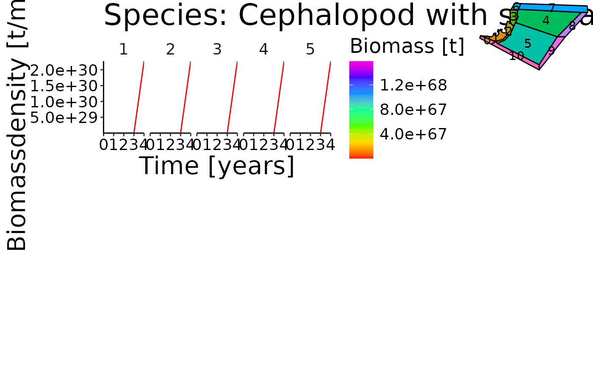
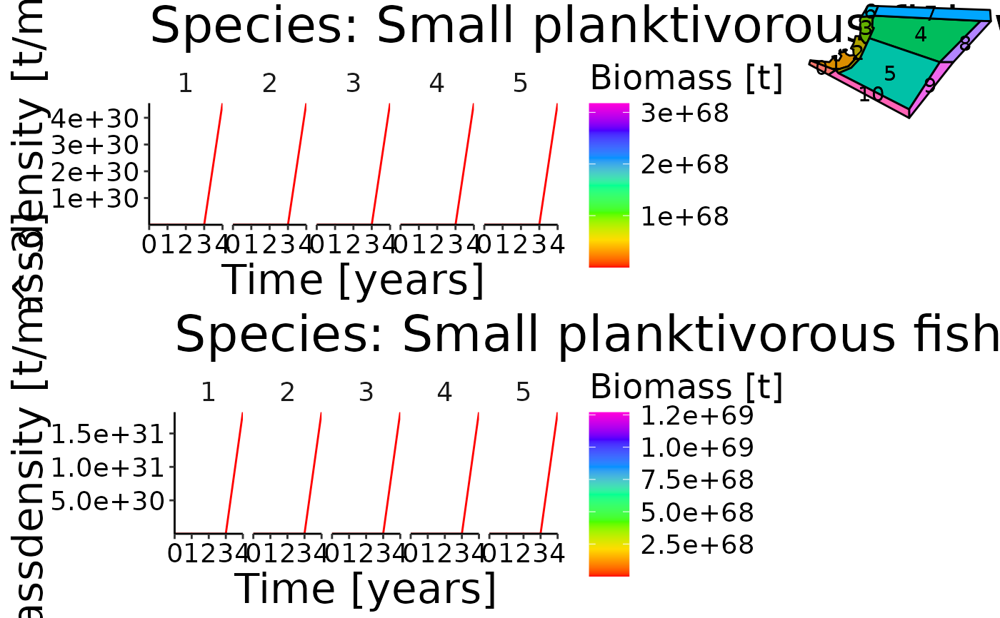

R/plot-spatial-ts.R
plot_spatial_ts.RdVisualize the spatial distribution per species and stanza combination.
plot_spatial_ts(
bio_spatial,
bgm_as_df,
vol,
select_species = NULL,
ncol = 7,
polygon_overview = 0.2
)Biomass per group and stanza in tonnes for each timestep,
layer and polygon. This dataframe should be generated with
calculate_biomass_spatial. The columns of the dataframe have to
be 'species', 'species_stanza', 'polygon', 'layer', 'time' and 'atoutput'.
Column 'atoutput' is the biomass in tonnes. Please use combine_ages
to transform an age-based dataframe to a stanza based dataframe.
*.bgm file converted to a dataframe. Please use convert_bgm
to convert your bgm-file to a dataframe with columns 'lat', 'long', 'inside_lat',
'inside_long' and 'polygon'.
Volume per polygon and timestep. See model-preprocess.Rmd for details.
Character vector listing the species to plot. If no species are selected
NULL (default) all available species are plotted.
Number of columns in final plot. Default is 7.
numeric value between 0 and 1 indicating the size used to plot the polygon overview in the
upper right corner of the plot. Default is 0.2.
grob of 3 ggplot2 plots.
d <- system.file("extdata", "setas-model-new-trunk", package = "atlantistools")
bgm_as_df <- convert_bgm(file.path(d, "VMPA_setas.bgm"))
vol <- agg_data(ref_vol, groups = c("time", "polygon"), fun = sum, out = "volume")
# Spatial distribution in Atlantis is based on adu- and juv stanzas.
# Therefore, we need to aggregate the age-based biomass to
# stanzas with \code{\link{combine_ages}}.
bio_spatial <- combine_ages(ref_bio_sp, grp_col = "species", agemat = ref_agemat)
#> Joining with `by = join_by(species)`
# Apply \code{\link{plot_spatial_ts}}
grobs <- plot_spatial_ts(bio_spatial, bgm_as_df, vol)
#> Joining with `by = join_by(time, polygon)`
#> `geom_line()`: Each group consists of only one observation.
#> ℹ Do you need to adjust the group aesthetic?
#> `geom_line()`: Each group consists of only one observation.
#> ℹ Do you need to adjust the group aesthetic?
gridExtra::grid.arrange(grobs[[1]])

gridExtra::grid.arrange(grobs[[7]])
